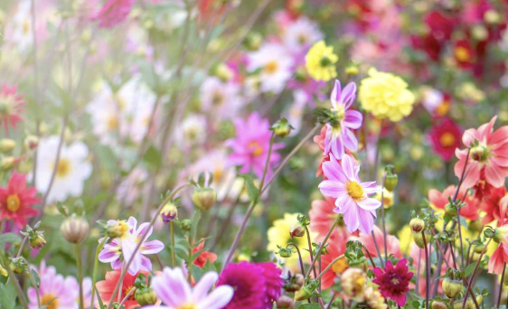
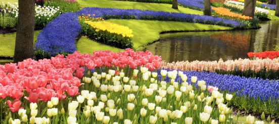

homepage
daisys
lilacs
forget me nots
wisteria
Flowers
These are a few of my favorite flowers and some information about them. I have always loved flowers and since i was little they have always been a part of my life.
pictures


daisys
forget me nots
lilacs
wisteria